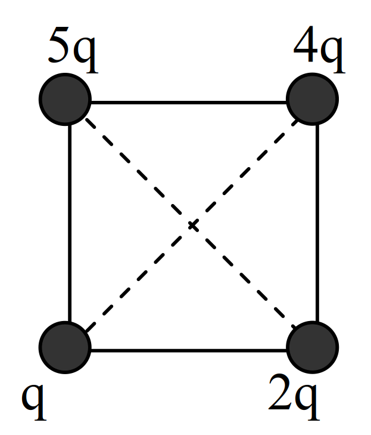
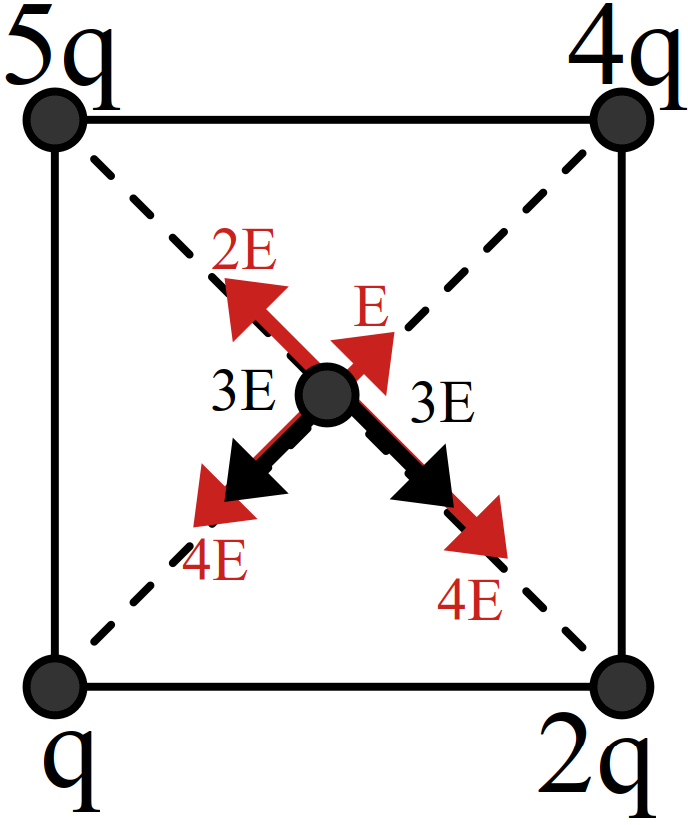
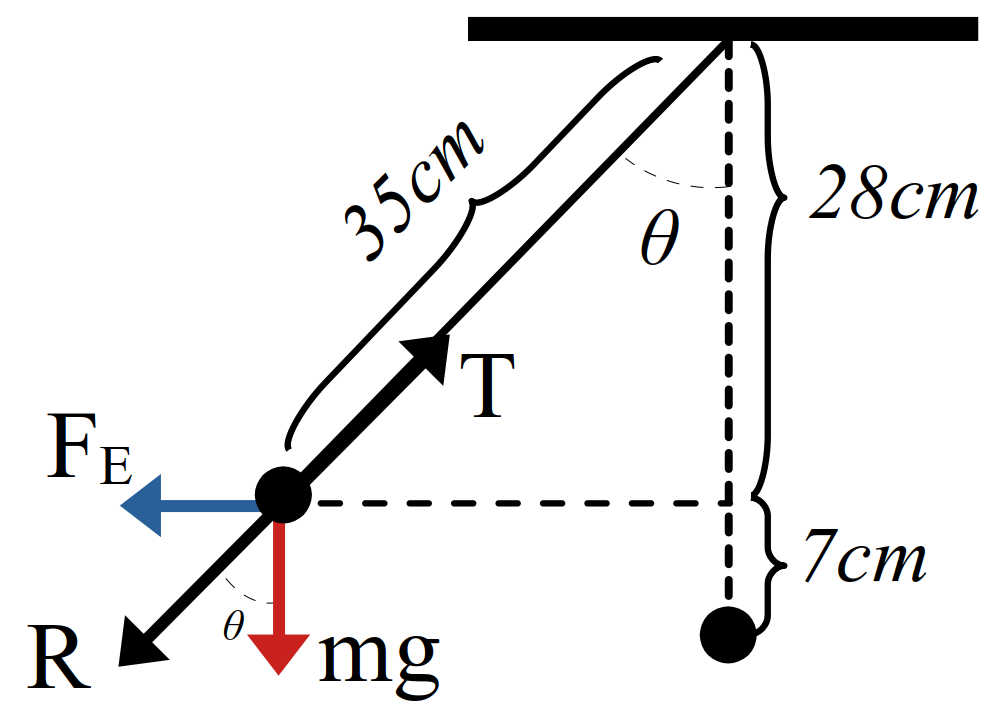

خطوط میدان الکتریکی
تعریف 9 خط های میدان در هر نقطه، هم جهت با بردار میدان الکتریکی در آن نقطه است.

شکل 23: خطهای میدان در هر نقطه
تعریف 10 ویژگی خطوط میدان:
- جهت خطوط هم جهت نیروی وارد بر بار مثبت
- تراکم خطوط معرف بزرگی میدان
- راستای میدان خط مماس بر خطوط میدان
- خطوط یکدیگر را قطع نمیکنند.

شکل 24: رسم خطوط میدان الکتریکی
مثال 28 به نظر شما چرا خطوط میدان الکتریکی برایند هرگز یکدیگر را قطع نمی کنند؟ (پرسش کتاب تجربی و ریاضی)
نمایش پاسخ
در هر نقطه فضا، یک میدان الکتریکی یکتا وجود دارد که همان میدان الکتریکی خالص (برایند) است و چون میدان الکتریکی در آن نقطه از فضا یکتا است، بنابراین میدان الکتریکی برایند دیگری در آنجا وجود ندارد که تقاطع ایجاد کند.روش 8 حالتهای مختلف خطوط میدان:
شکل 25: الف) میدان الکتریکی اطراف یک بار مثبت منفرد. ب) میدان الکتریکی اطراف یک بار منفی منفرد پ) میدان الکتریکی اطراف دو بار هماندازه و ناهمنام (دوقطبی الکتریکی) ت) میدان الکتریکی اطراف دوبار ناهمنام نابرابر ث) میدان الکتریکی اطراف دوبار مثبت هماندازه ح) میدان الکتریکی اطراف دو بار مثبت نا برابر
مثال 29 بار \(-q\) را در نقطههای A، B و C از میدان الکتریکی غیر یکنواخت شکل روبه رو قرار دهید و جهت نیروی الکتریکی وارد بر این بار منفی را تعیین کنید.

نمایش پاسخ
نیروی الکتریکی وارد بر بار منفی در خالف جهت میدان \(\vec{E}\) است، و بنابراین اگر نیروی دیگری به این بار اثر نکند، بار منفی در خالف جهت میدان شتاب میگیرد. در هر سه نقطه، نیروی الکتریکی وارد بر بار \(-q\) در خالف جهت پیکان های خطوط میدان الکتریکی است.

مثال 30 با توجه به خطوط میدان: (تمرین کتاب تجربی و ریاضی)

الف) نوع بارهای A، B و C را تعیین کنید.
ب) اندازه بار آنها را باهم مقایسه کنید.
نمایش پاسخ الف
- \(q_A\) منفی
- \(q_B\) مثبت
- \(q_C\) مثبت
نمایش پاسخ ب
\[ \require{cancel} \begin{aligned} |q_A| & = |q_C| < |q_B| \end{aligned} \]میدان الکتریکی یکنواخت
تعریف 11 ویژگیهای میدان الکتریکی یکنواخت: میدانی است که خطوط آن راست، موازی، همفاصله و همجهت هستند.

شکل 26: الف) میدان الکتریکی اطراف یک بار نقطهای و یک صفحه رسانای باردار با بارهای ناهمنام ب) میدان الکتریکی یکنواخت
مثال 31 در اتاقک خلا، میدان الکتریکی یکنواختی رو به پایین برقرار شده است. اگر یک الکترون به طور افقی در این ناحیه گسیل شود، شتاب آن:
- رو به پایین و ثابت
- رو به بالا و ثابت
- رو به بالا متغییر
- رو به پایین و متغییر
نمایش پاسخ
2مثال 32 وضعیتی را در نظر بگیرید که قطره روغن در فضای بین دو صفحه معلق است. اگر جرم این قطره روغن \(8.2 \times 10^{-15} kg\) و میدان الکتریکی دارای بزرگی \(10^{5} \frac{N}{C}\) و رو به پایین باشد، تعداد الکترون هایی که قطره جذب کرده یا از دست داده است، چقدر است؟
شکل 27: اسباب آزمایش اولیه میلیکان و طرحی از آن
نمایش پاسخ
چون قطره روغن در میدان الکتریکی معلق است و وزن همواره رو به پایین اثر می کند، بنابراین، نیروی الکتریکی باید مطابق شکل رو به باال بر قطره روغن اثر کند. چون جهت نیروی الکتریکی رو به باال و جهت میدان الکتریکی رو به پایین است، نتیجه می گیریم که بار قطره روغن باید منفی باشد؛ یعنی باید قطرهٔ روغن الکترون به دست آورده باشد. حال به دنبال تعداد الکترون هایی هستیم که این قطره به دست آورده است.
\[ \require{cancel} \begin{aligned} F_E & = F_w \\ \Rightarrow \cancelto{ne}{|q|} E & = mg\\ \Rightarrow n & = \cfrac{mg}{eE} \\ & = \cfrac{8.2 \times 10^{-15} kg \times 9.8 \frac{N}{kg} }{10^{5} \frac{N}{C} \times 1.6 \times 10^{-19}C} \\ & = 5 \end{aligned} \]مثال 33 روی سطح بادکنکی به جرم \(10g\) بار الکتریکی \(-200nC\) ایجاد میکنیم و آن را در یک میدان الکتریکی قرار میدهیم. بزرگی و جهت این میدان الکتریکی را در صورتی که بادکنک معلق بماند، تعیین کنید. از نیروی شناوری وارد به بادکنک چشم پوشی کنید.
نمایش پاسخ
\[ \overset{\vec{E}}{\underset{ \large \downarrow\downarrow\downarrow\downarrow\downarrow\downarrow}{ \overset{\large \downarrow\downarrow\downarrow\downarrow\downarrow\downarrow }{\small \downarrow {\Huge\circ} \downarrow}}} \]
\[ \require{cancel} \begin{aligned} F_E & = F_w \\ \Rightarrow |q| E & = mg \\ \Rightarrow E & = \cfrac{mg}{|q|} \\ & = \cfrac{10\times 10^{-3}kg\times 10\frac{N}{kg}}{200\times 10^{-9}C}\\ & = 5 \times 10^{5} \frac{N}{C} \end{aligned} \]مثال 34 در شکل مقابل برآیند میدان در نقطه \(C\) صفر است. نسبت \(\frac{q_2}{q_1}\) چیست؟
\[ \underset{A}{\overset{q_1}{{\LARGE\bullet}}} \underset{60cm}{-----} \underset{B}{\overset{q_2}{{\LARGE\bullet}}} \underset{20cm}{---}\underset{C}{{\LARGE.}} \]
- \(-\cfrac{1}{16}\)
- \(-\cfrac{1}{4}\)
- \(\cfrac{1}{3}\)
- \(\cfrac{1}{2}\)
نمایش پاسخ
\[ \underset{A}{\overset{q_1}{{\LARGE\bullet}}} ----- \underset{B}{\overset{q_2}{{\LARGE\bullet}}} --\leftarrow\underset{C}{{\LARGE.}}\rightarrow \]
\[ \require{cancel} \begin{aligned} 0 & = E_1 - E_2 \\ E_{1} & = E_{2} \\ \cancel{k} \cfrac{|q_1|}{r_1^2} & = \cancel{k} \cfrac{|q_2|}{r_2^2} \\ \cfrac{|q_2|}{|q_1|} & = \cfrac{r_2^2}{r_1^2} = \cfrac{4}{64} = \cfrac{1}{16} \\ \cfrac{q_2}{q_1} & = - \cfrac{1}{16} \end{aligned} \]مثال 35 اگر در راس مربع مقابل بار \(q\) قرار گیرد میدان در مرکز مربع \(E\) میشود. باتوجه به شکل برآیند میدان در مرکز مربع چند \(E\) میشود.

- \(\sqrt{2}\)
- \(2\sqrt{2}\)
- \(\frac{3}{2}\sqrt{2}\)
- \(3\sqrt{2}\)
نمایش پاسخ

\[ \require{cancel} \begin{aligned} E_T & = \sqrt{2}\times3E \\ \cfrac{E_T}{E} & = 3 \sqrt{2} \end{aligned} \]مثال 36 در شکل مقابل \(q_1=q_2=-2\) میباشد \(q_3\) کدام باشد (برحسب میکروکولن) تا برآیند میدان در مرکز دایره صفر شود؟

- \(-\sqrt{2}\)
- \(2\)
- \(-2\)
- \(2\sqrt{2}\)
نمایش پاسخ

مثال 37 درشکل مقابل جرم گلوله آونگ \(4g\) است. و طول نخ متصل به آن \(35cm\) است. اگر به گلوله بار \(q\) داده و درون میدان یکنواخت \(2 \times 10^{4} \frac{N}{C}\) قرار گیرد. درون میدان منحرف شده و راستای نرخ از خط قائم \(\theta\) درجه میشود. بار گلوله چند میکروکولن است؟ \((10^{5} \frac{N}{kg})\)

- \(-1.5\)
- \(-1.2\)
- \(0.15\)
- \(0.12\)
نمایش پاسخ

\[ \require{cancel} \begin{aligned} \cos{\theta} & = \frac{28}{35} = \frac{4}{5} \\ \sin{\theta} & = \sqrt{\cancelto{\frac{9}{25}}{1 - \cancelto{\frac{16}{25}}{\cos^2{\theta}}}} = \frac{3}{5} \\ \cancelto{\frac{\sin{\theta}}{\cos{\theta}}}{\tan{\theta}} & = \frac{\cancelto{|q|E}{F_E}}{mg} \\ \frac{3}{4} & = \frac{|q| \times 2 \times 10^{4}}{4\times 10^{-3} \times 10} \\ |q| & = \cancelto{1.5}{\frac{3}{2}} \times 10^{-6} C \\ q & = \boxed{- 1.5} \mu C \end{aligned} \]مثال 38 در شکل مقابل بار \(q_1,q_2\) را چند سانتی متر جابجا کنیم تا میدان حاصل از بارها در نقطه \(O\) صفر شود.

- \(4cm\) به راست
- \(4cm\) به چپ
- \(10cm\) به راست
- \(10cm\) به چپ
نمایش پاسخ
\[ \underset{\LARGE \underset{E_1}{\downarrow}}{ \overset{\LARGE\overset{E_2}{\uparrow}}{ E_3 \leftarrow o \rightarrow E_4 }} \]
\[ \require{cancel} \begin{aligned} E_1 & = E_2 \\ E_3 & = E_4 \\ \cancel{k} \frac{\cancelto{\cancel{3}}{q_3}}{\cancelto{36}{r_3^2}} & = \cancel{k} \frac{\cancelto{\cancelto{9}{27}}{q_4}}{\cancelto{(8 + x)^2}{r_4^2}} \\ (8 + x)^2 & = 9 \times 36 \\ 8 + x & = 3 \times 6 = 18\\ x & = \boxed{10cm}\\ \end{aligned} \]